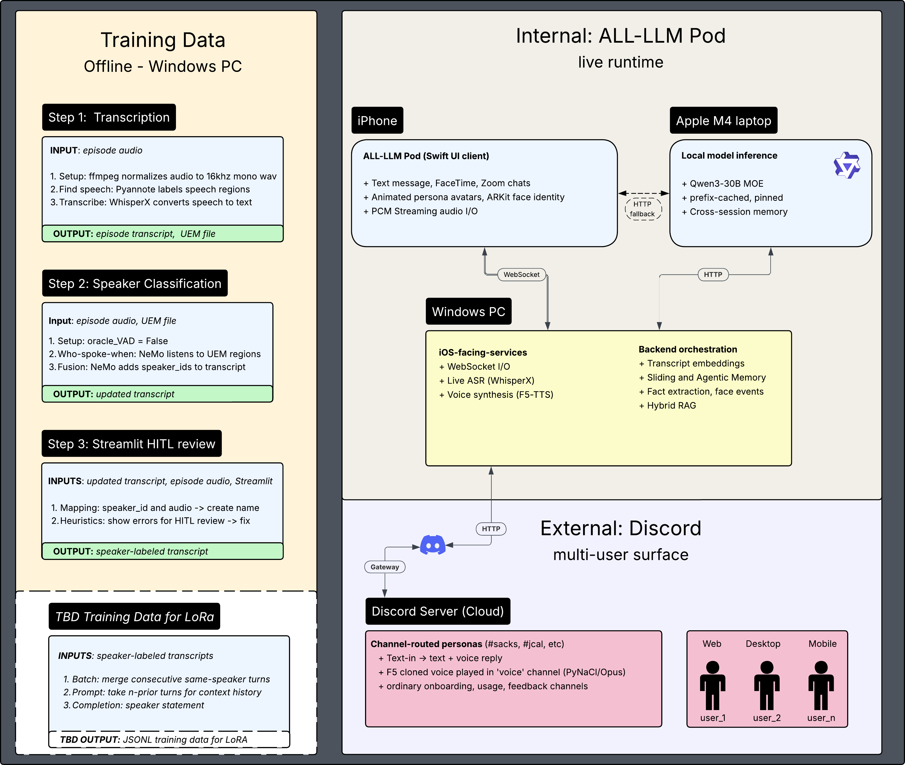
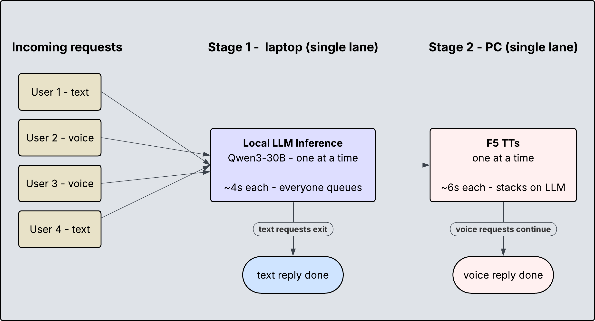

System Architecture
Runtime Architecture
ALL-LLM Pod is a distributed realtime inference system spanning training data, orchestration, local model inference, and external multi-user clients.
The system began as an iOS-first persona app. The architecture now separates the product surface from the runtime: the iPhone handles interaction, the Windows PC orchestrates ASR, TTS, memory, RAG, and control flow, and the Mac handles local Qwen3 inference. Discord extends the same backend into a shared multi-user surface.

Internal runtime, training-data pipeline, and Discord inference path
The Runtime Split
The core architectural decision is separation of lanes. The Windows PC owns orchestration because it already hosts the GPU-heavy audio services: WhisperX for realtime ASR and F5-TTS for voice synthesis. The Mac owns local LLM inference because Apple Silicon unified memory can keep Qwen3-30B-A3B resident with the persona prompt cached across turns.
This split started as a VRAM workaround. It became the architecture. Moving the language model off the 12GB Windows GPU freed the PC to handle audio, routing, memory, and user-facing control while the Mac ran the larger model.
Request Flow
A request enters through iPhone or Discord. Text requests go directly to prompt assembly and local inference. Voice requests first pass through ASR, then follow the same prompt path. If the response needs voice, generated text returns to the PC for F5-TTS before streaming back to the client.
The current constraint is serialization. Both the local LLM and TTS operate as single-lane services. Multiple users can submit requests, but they queue behind shared inference and synthesis resources.

Single-lane inference and TTS queueing model
Why Queueing Matters
Queueing is the difference between a demo and a multi-user system. A single user can experience acceptable latency because requests move cleanly through ASR, LLM, and TTS. Several users at once create contention: text and voice requests compete for the same LLM lane, and voice requests continue into a second serialized TTS lane.
Scaling therefore becomes a scheduling problem: which requests can wait, which should stream, which should skip voice, and which should route to a lighter path.
Training Data as Infrastructure
The runtime depends on speaker-labeled transcripts. Podcast audio is processed offline into structured training data, then used for persona prompts, RAG retrieval, memory injection, and voice-reference selection.
This made transcript fidelity a first-order architecture problem. Short utterances, cross-talk, dropped audio, and speaker-label drift do not merely affect transcripts; they directly affect how the personas speak, remember, and respond.
Discord as External Runtime
Discord changes the project from a local app into a shared inference surface. Users can summon personas into channels, receive text replies, hear TTS in voice channels, and eventually trigger panel-style conversations between multiple hosts.
The first Discord version should be text-in and voice-out: slash command, persona selection, Qwen response, F5-TTS playback, and transcript posted to the channel. Live speech input can come later.